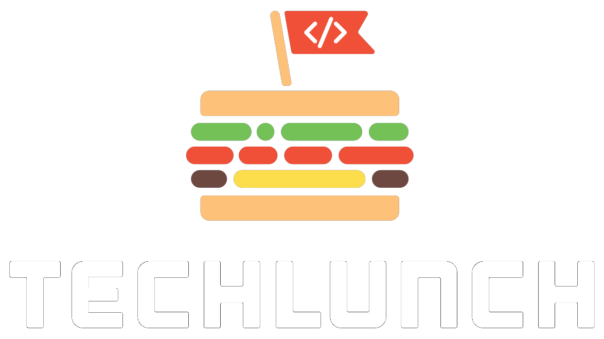
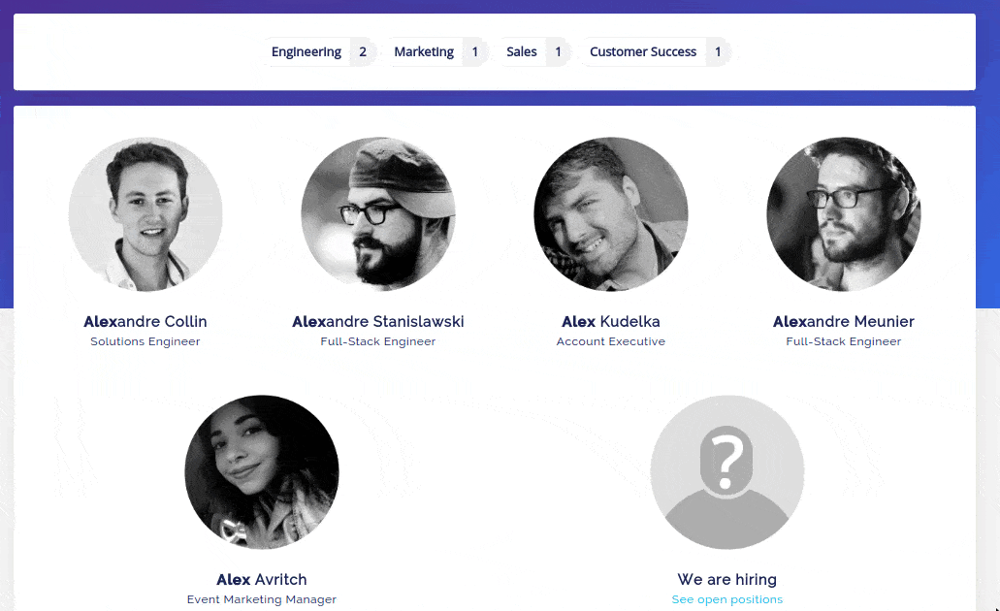

How to unselect a radio button
Tim Carry
@pixelastic



Faceting

Global state with radios
<input type="radio" name="f" id="radio_1" />
<input type="radio" name="f" id="radio_2" />#radio_1, #radio_2 {
display: none;
}<label id="label_1" for="radio_1">
Engineering
</label>
<label id="label_2" for="radio_2">
Marketing
</label>// Highlight selected label
#radio_1:checked ~ #label_1,
#radio_2:checked ~ #label_2 {
background: green;
}
// Hide non-matching results
#radio_1:checked ~ #result_5,
#radio_1:checked ~ #result_42 {
display: none !important;
}#radio_1
#radio_2
Engineering
Marketing
Phantom element
++ <input type="radio" name="f" id="radio_X" />
++ <label id="label_X" for="radio_X"></label>#label_X { display: none; }
// Hiding selected label
#radio_2:checked ~ #label_2 {
display: none;
}
// Faking with the phantom one
#radio_2:checked ~ #label_X {
display: block;
background: green;
&:before {
content: "Marketing";
}
}#radio_1
#radio_2
#radio_X
Engineering
Marketing
#radio_1
#radio_2
#radio_X
Engineering
Marketing
Marketing
#radio_1
#radio_2
#radio_X
Engineering
Marketing
tim@
pixelastic
.comHow to unselected a radio button
Tim Carry